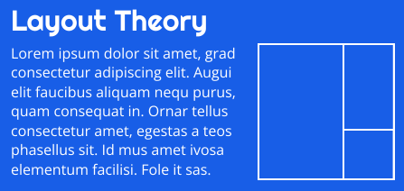
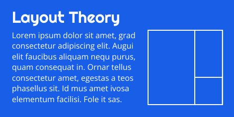
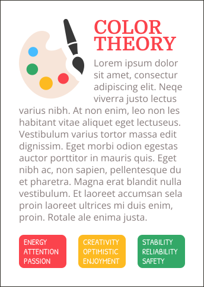
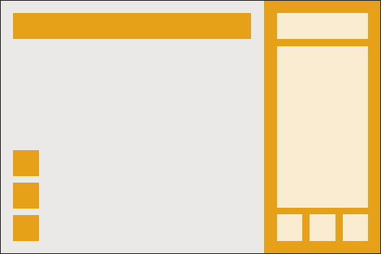
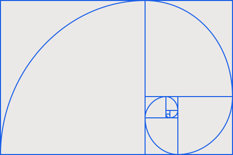

Layout
Pojem layout znamená grafické rozložení prvků na nějaké ploše. Layout na diváka často vytváří první dojem a může určit jestli náš design bude zkoumat dál nebo jej ignorovat. Naším úkolem je layout navrhnout tak, aby byl obsah designu pro diváka snadno stravitelný a nemusel moc přemýšlet kam se má podívat.
Kompozice
Při tvorbě designu musíme určit, jak jednotlivé prvky našeho designu rozmístíme a jakou jim přidělíme vizuální váhu. Pokud se například snažíme prodat nějaký produkt, tak může být jeho obrázek v designu to hlavní. V jiných případech může být hlavním prvkem třeba text. Také musíme určit, v jakém pořadí chceme divákovi obsah designu ukázat. Podle toho jej rozmístíme tak, aby na ně v tomto pořadí divák narazil. Dále bychom měli seskupit dohromady informace, které k sobě patří, aby nebyla jedna část v horní části stránky a další dvě až třeba někde dole.
Stejně jako fotky a typografie, tak i layout může v divákovi vyvolávat různé emoce. Například perfektní zarovnání může vyvolat smysl profesionalismu a uspořádanosti.
Důležitým aspektem layoutu je také místo, odkud divák náš design začne zkoumat a co zaujme jeho pozornost jako první. Pokud máme v našem designu těchto míst více, tak divák neví kde má začít a může pro něj náš design být matoucí.
Margin a prázdné místo
Prázdné místo v designu není špatná věc. Do jisté míry dává našemu designu šanci dýchat.
Margin
Pojmem margin se označuje prázdné místo kolem nějakého prvku designu. Například mezery kolem okrajů stránky je margin. Margin by měl být dostatečně velký, pokud není tak design nevypadá vůbec dobře. Často je to právě margin, který je potřeba zvětšit pro zlepšení některých designů.
 Prázdné místo
Prázdným místem (anglicky white space) se v designu většinou myslí mezery mezi jednotlivými prvky designu. Díky prázdnému místu má náš design šanci dýchat. Pokud máme hodně prázdného místa, tak to může vyvolávat smysl pro sebevědomí a klid. Pokud máme málo prázdného místa a prvky jsou umístěny moc těsně u sebe, tak to naopak může v divákovi vyvolat pocit úzkosti nebo urgence.
Grid
Při tvorbě layoutu designu je dobré používat grid (mřížku). Ten nám pomáhá rovnoměrně rozmisťovat obsah designu. Často je také dobré některé rozměry designu nastavovat podle základní jednotky, kterou si pro design určíme. Můžeme si například určit, že všechno budeme dělat v inkrementech 8 pixelů. Díky tomu náš design může být více konzistentní. Není to ale pravidlo, takže klidně nemusíme používat žádnou základní jednotku pokud nechceme. Hlavně se to používá pro design webových stránek. O gridu a základní jednotce pro design webových stránek mám článek na mých webových stránkách o web designu. Tam se o gridu můžete dozvědět více, pokud byste chtěli.
Předtím než začneme umisťovat obsah designu na stránku, tak je dobré provést blocking. Jedná se o rozvrhnutí obsahu na stránce pomocí obdelníků nebo čtverců. Pomáhá nám to ujasnit si co kde umístíme. Při blockingu je dobré udržovat všude zhruba stejné mezery. Dělá nám to design více konzistentním.
Zlatý řez
Jako zlatý řez se označuje poměr o hodnotě přibližně 0,62 : 0,38. Pokud pomocí tohoto rozměru například rozdělíme stránku na dvě poloviny, tak to bude na diváka působit estetičtěji než kdybychom ji rozdělily například podle poměru 1 : 4. Je to proto, že se zlatý řez ve velké části vyskytuje v přírodě. Můžeme jej najít v lidském obličeji, ve stavbě květů, ulitách šneků, a tak podobně.
Když zkusíte na internetu vyhledat 'zlatý řez', tak můžete narazit na obrázek spirály zlatého řezu. Tato spirála se dá v některých případech použít pro vytvoření layoutu. Jedná o postupné rozdělování stránky podle zlatého řezu.
User Experience
User Experience (UX) je věc, která hraje důležitou roli hlavně u webových stránek a aplikací. Snažíme se aby bylo používání našich webových stránek nebo aplikace pro uživatele co nejpříjemnější. UX se dá ale také aplikovat třeba i v tištěném designu. Většinou platí že čím méně možností, tím lepší je uživatelská zkušenost, protože uživatel není těmito možnostmi zahlcen. Pokud je to možné, tak je často dobré dělat věci co nejjednodušší.
pokračovat na další část